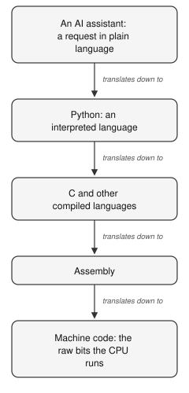

11 Instruction
Programmers face a trade-off. The closer your instructions are to the machine’s own language, the more direct control you have, and the more painful they are to write. The closer your instructions are to plain human language, the easier they are to write, and the more you are trusting something else to bridge the communication with the CPU. The history of programming is basically a history of adding new layers to the stack of translations between you and the CPU.
Layers of instruction
At the bottom is machine code, the raw bits the CPU runs. One step up is assembly, which swaps the bit patterns for short words like MOV and ADD, still one word per machine step. Higher up are compiled languages like C: now you write recognizable words and arithmetic, and a program translates the whole thing down to machine code before it runs. Higher still are interpreted languages, and this is where Python lives, the language you are about to learn.

In the diagram, notice that every level is a translator down to the level below it. Assembly is translated to machine code; C is translated to assembly code; Python code is handled by a the Python program, which turns each instruction into machine steps as it goes. This makes Python an interpreted language. Unlike the C language where a compiler takes your entire code file and translates it all into machine code before it runs, Python it reads your file with code and runs its instructions, one line at a time and produce the machine code to make the CPU execute the instruction. This is also, quietly, why we make you run scripts from the terminal before we ever open a notebook. Typing python hello.py forces four things apart that a notebook glues together: the file on the disk, the interpreter that reads it, the CPU that does the work, and the terminal where you launch it and watch the output. Once you have felt those four as separate things, the rest of the course is much less mysterious.
An interpreter is a translator you can trust to mean exactly what your code says. Hold that thought right up against the AI, because the AI is about to look like just one more level on the ladder, and the most important lesson in this course is the exact way in which it is not.
AI
For the purpose of producing code, an AI assistant looks like it belongs at the very top of the ladder, closer to human language than the levels below it: If you ask an AI in plain English how to solve a problem, like “How do I find open reading frames in this DNA sequence”, it will offer to hand Python code back to you. It looks like just the next translator, from a description even nearer to how you actually think, down toward code the machine can run. However, where as the levels described above were exact 1:1 translations, what you get from an AI is a basically a really qualified guess.
So the framing is useful right up until the moment it breaks. And where it breaks is the whole point. To see the break, you have to look at what the AI is actually doing under the hood, which is nothing like what a compiler does. In simple terms, a modern AI language model does one small thing over and over: it guesses the next word. You give it some text, your question, your request. It reads all of it and then scores every possible next token (a token is a word, or a small piece of a word), by how likely that token is to come next. It picks one, adds it to the text, and then does the whole thing again to choose the word after that, and the word after that, until it has produced a full answer. If a AI were to continue “the stop codon in this sequence is” and the model rates TAG as the most likely next word and picks it. It would chose TAG because, across the mountains of text it has seen, that word tends to follow in sentences like this, not because it went and checked any actual sequence. It is producing a plausible continuation. Often the plausible answer is also the correct one, and sometimes it is fluent, confident, convincing - and completely wrong. That gap, between plausible and true, is the most important thing to understand about these tools.
The AI learns, in a process called training, done before the model is released for use. During training, the model is shown an enormous amount of text, books, websites, articles, code, much of the public internet. Over and over it plays a game: hide the next word, let the model guess it, then compare the guess to the word that was really there. Every time, it nudges the values of millions of internal variables, called weights, to make it a little better than guessing. Repeat that billions of times and the weights settle into a configuration that makes startlingly good guesses about what word comes next. Those weights are everything the model knows. There is no library of facts inside it, no lookup table, only the model and its fitted weights. It is not completely unreasonable to compare it to a linear regression. That is also just a model that can give you a plausible Y value if you hand it an X value, but only once it has been “trained” on lots of x,y data to fit its slope and intercept variables.
Although an AI arguably makes for better conversation than a linear regression model, but once trained, its behavior is also completely fixed. Only the input you provide determines the what reply you get, just like the only way to get a different Y value from the regression is to pass it a different X value. Whatever it knows is baked into those weights from training, which is why it can be out of date, and why it does not base its responses on external evidence unless you explicitly ask it to, and even then, it may still be guessing a plausible continuation, rather than doing what you ask. Second, because it learned patterns from human text rather than following rules someone wrote down, it can produce something that sounds exactly like a correct answer while being false. It has no separate sense of truth, only a sense of what most plausibly comes next. When a false statement is a likely-sounding one, a plausible but wrong gene function, an off-by-one in a loop, a codon table with a quiet mistake, the model may hand it to you with total confidence. This has a name in the AI world: hallucination.
The reason that AIs have revolutionized programming is that, even with their occasional hallucinations, they come a long way towards something truly amazing: translating a problem stated in plan language into computer code that solves that problem on your computer. The more precisely you can specify a problem and the more completely you can verify the code the AI returns, the more empowering AI it is. If you only one thing from this chapter, remember this:
An AI is useful to you up to the limit of what you can specify and verify.
Understanding Python lets you specify problems more precisely, and lets you test that the code produced does exactly what you want it to.
Exercise 11-1
Before you touch the assistant, close the diagram and write the five levels of the ladder out in order from memory, from the raw bits at the bottom to plain language at the top. Beside each one, write a single word: faithful if that level is a translator that always means exactly what the level above it said, and plausible if it is not. Four of the five get the same word and one does not. Being able to say which one, and why, is the entire argument of this course compressed into five lines, and you now have it before you have written a single line of Python.
Exercise 11-2
Open the assistant in your browser and ask it a small factual question you can check, for example, what the three stop codons of the standard genetic code are. Read its answer. Then find a way to verify it that does not involve asking another AI: a textbook, a trusted database, or, later in this course, a tiny program of your own. Was it right? How did you know it was right, independently of the AI telling you so? Note what the badge on this exercise permits and what it does not. You asked it to explain something that already exists, and you settled the question somewhere else. That is the whole of level one, and it is the only level you have.
Exercise 11-3
Now ask the assistant to explain the difference between a compiler and itself: what does a compiler guarantee about the code it produces that you cannot guarantee about the code you produce? Read the answer against what this note just told you. Two things are worth noticing, and they pull in opposite directions. The answer will probably be good, because this is a well-worn question and there is a great deal of text about it. And the answer was produced by exactly the process it is describing, one plausible next word after another, which means a fluent account of its own unreliability is not evidence of anything. It cannot check itself any more than it could check the stop codons.
Write two or three sentences in your logbook: what you asked, what it said, and how you checked. This is your first entry, and by the end of the course you will have a running record of exactly where the machine helped you and where it quietly misled you, and, more importantly, of your own growing ability to tell the difference.
You now have both pictures. A computer is switches, made into numbers, made into files of instructions, run by a CPU on what memory holds, all managed by an operating system, and Python is a trustworthy translator from words you can read down to those instructions. An AI is a next-word guesser that is very good at what it does and whose output is plausible rather than guaranteed. Everything else in this book is you building the one ability that lets you use the second safely: the ability to read what it writes, run it, and see for yourself.